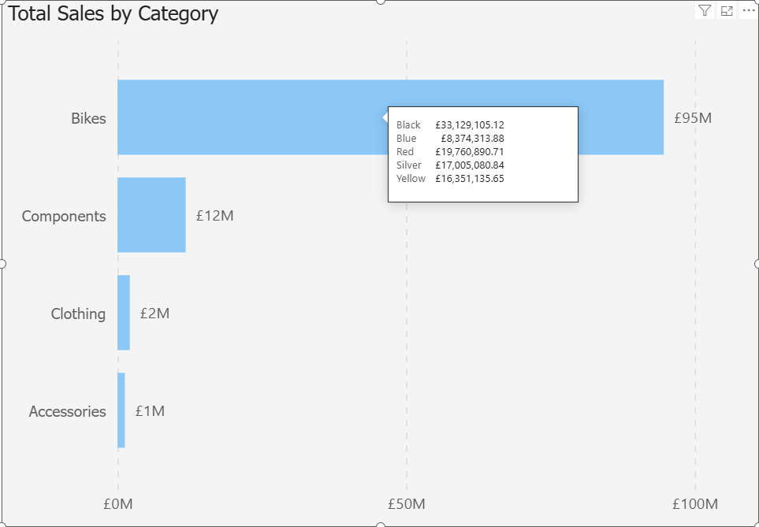
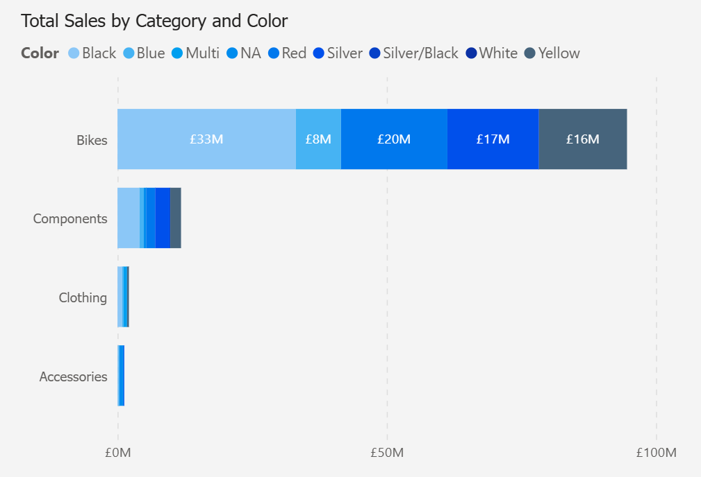

The Five Whys
The Two-Option Requirement
Picture the scene: a ticket arrives into refinement stating that although what we have built is great (a bar chart) the user has suggested an improvement to be able to see the breakdown of the data per segment.
Product put forward two different options on the story: firstly, keep the visual as-is but add a tooltip showing the breakdown per segment. Or as an alternative changing the visual to a stacked bar with each stack representing the different segments.


The team got to discussing the implementation of either option, how to do it and the relative ease of each one. I sat back and thought "in order to make this successful, we need to understand why the user wants this enhancement". That was missing from this story and discussion.
I would argue that the most powerful tool in a builder's kit isn't framework or language, it's the repeated discipline of asking one word: "why?".
I've worked with a number of development teams over the years and they have all been technically capable of producing amazing results. What separates great teams from good teams is the ability to step back and ask "why?" and seek to understand the user's motivations. Only by putting ourselves in the user's shoes can we deliver something truly amazing.
This is a combination of the Customer is King and Simple For Who? paradigms in action.
The "What" Factory
In this type of factory, the "why" muscle atrophies. We have the task-doers who execute the literal what and don't concern themselves with the why.
On top of this we have the transactional manager who is driven by task completion. They see a route to the finish and don't stop to think about the why. In their eyes as long as the task is done, it has been a success.
This mentality results in a "what" factory. They produce activity, artefacts and a lot of "superficial" progress that often solves the wrong problem.
At a later time, the PO revisits this work and course corrects so the real problem is addressed. Nobody sees the correlation and the inefficiency of solving the problem twice.
The Five Whys In Action
This is about studying the request and getting to the heart of the user's need:
- Layer 1: The Original Ask - would like to see the split between the different segments for the visual.
- Layer 2: Why is this needed?
- To understand the composition of the work
- Layer 3: Continue asking, each answer becoming the next question
- Why do they need to understand the composition of work?
- To see if one type is dominating the work when it shouldn't
- Why do they need to know if one type is disproportionately high?
- So they can investigate the root cause
- Why investigate the root cause?
- So they can take targeted action to reduce future work of that type.
- Why do they need to understand the composition of work?
- Layer 4: The Bedrock "Why"
- Why reduce future work?
- To improve team efficiency, product quality and predictability
- Why reduce future work?
This is the "Aha!" moment where the symptom (the requested feature) is separated from the disease (the lack of insight or visibility of the inefficiency).
The user doesn't need a split visualisation. They need a system to trigger targeted intervention.
The "what" was a proposed solution. The "why" is the actual problem. Uncovering the why might lead you to a completely different report design for the user. The tooltip or stacked bar chart are now seen as possible components of this larger system.
Why This Is A Lonely Gift
This mindset is isolating. Most people focus on the "what" and activity feels good and is rewarded even if it is in the wrong direction. It's visible and so can be felt. Movement beats progress every time.
In certain cultures optimised for speed, you are not seen as adding rigour. Instead you are seen as "blocking progress" or "overcomplicating things". Completing a ticket is seen as the goal rather than building a high-quality data product.
The sadness is in seeing the system clearly but being powerless to change it.
The builder who asks 'why' in that refinement meeting isn't blocking progress. They're preventing next month's re-work.
From Isolated Practice to Team Discipline
The Five Whys approach is not a tool to use in silence. Instead it's a ritual to institutionalise in refinement. The goal is to make "Why?" the first question the team asks. Thereby shifting identity from task-doers to problem-solvers.
A practical way to implement this could be as follows:
The First Why Rule
Propose a rule that no story can be scored or accepted into sprint until the ticket answers the first "Why?" in its description. This forces the initial thinking to Product, where it should reside.
The Five Minute Drill
If in refinement a solution is proposed early, anyone can instigate a five-minute drill to explore the five whys. To ensure that the team is not sidetracked by the first solutions and other avenues are explored thoroughly.
These two behaviours move your team from a what factory to a why engine.
Velocity Through Clarity
The counter argument to this approach is that it slows progress and is negative.
My read is that rigour (and this is what this is) is not the enemy of velocity. It is the precursor. The time spent asking why before putting a spade in the ground saves order of magnitudes more time in not building, testing, deploying and later re-working the wrong thing.
It is a lot easier and cleaner to pivot and change direction before any foundations have been laid than during.
This is a form of seniority and leadership. It is absolutely not about being a blocker or being difficult. Instead it's firstly caring for your team's energy and morale long-term (not just today) and secondly caring for the data product's quality and integrity.
The Five Whys is like pausing to look at a map and plotting a route before a long drive. The "What Factory" is the culture that celebrates pressing the accelerator immediately even if it's in the wrong direction. Which one arrives at the correct destination first? And having expended less energy?
The next time you're handed a "what", take a pause and ask "why?". Then ask it again. The answer might surprise you and save you months of wasted effort in the wrong direction.
The loneliness you might feel is the distance between you and a What Factory. But the clarity you'll find is the first step towards building a better data product.